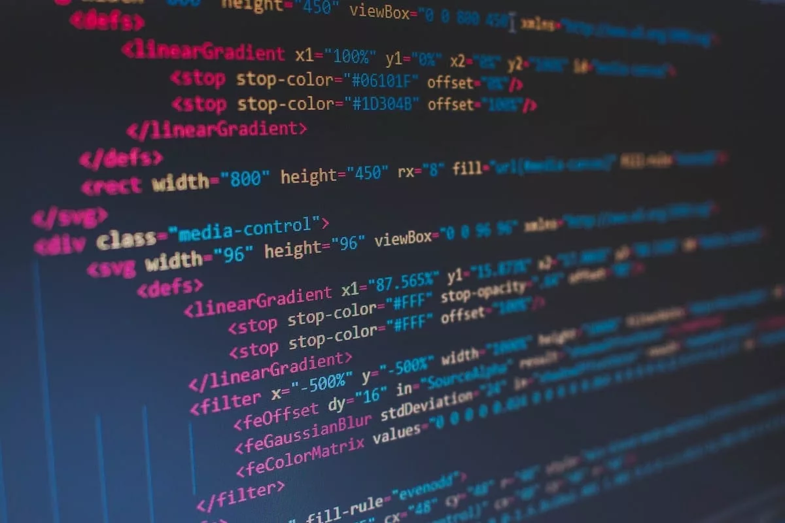

Map of computer science source: www.flickr.com
Map of computer science source: www.flickr.com
My current line of work, other than being a full-time student, is as an Uber Driver. I am a fairly shy person but I always try to talk to my riders to make them feel a little more comfortable. Often I get asked if Uber is my full-time job, where I am from (often followed by "What brought you here?"), or what my hobbies are. Once people find out that I am currently in college, the line of questions turns from general questions about me to specifically about my college life. One question that never fails to be asked is what brought me to study computer science.
 Source: careerkarma.comI grew up in the 90's when the internet was just starting to come out. I remember the cd's that you could get from AOL that advertised the internet. At the time, websites looked very plain and boring, but from a kids point of view, it was the greatest thing that I had ever seen. I was introduced to the way that HTML looked when I was messing around one day on the internet. To this day, I am not sure how I got to see it, but it made a huge impact on me. It was at that moment that I knew that I wanted to do something with computers when I grew up.
© Robtek/ShutterstockSeeing a bit of code as a kid isn't the only reason I chose to pursue a computer science degree. When I was in my early teens, I started to get really into video games. In the early 2000's, video games were starting to make it big. Games like Pokemon, Spyro, Banjo Kazooie, and many others captured my attention and got me hooked. I started thinking how much fun it would be to actually make these games. I started to research what it would take to get into the field and found out that a major part of video game design is programming. I started to try to teach myself Java, but due to the limited amount of resources around at that time for kids to learn, I was never really able to get a grasp on it. I hoped that later on in life, I would get the chance to learn, even if I had to try to teach myself again.
As I grew up, I started to look more at the economic benefits of the computer science field. As we all know, getting a job in something that you absolutely love really isn't going to make a difference if that field has a dying market. I knew that, as technology goes, computers are still a fairly new field. Sure, they have been around for more than 50 years and we have made great strides in the technology, but there is so much more that we could learn. In other words, any field of work that dealt with computers was not going to die down any time soon. So from a purely ecomonical standpoint, I knew that this field would be a great one to get into.
Source: XKCDAs it turns out, I get to live my childhood dream of learning more about computers and how they work. The field of computer science is growing every day and I am glad that I get to be a part of it. Who knows, maybe one day I will get to work on a major video game or design a website for a well known business. At this point, anything is possible and I look forward to the future and seeing where this profession takes me.